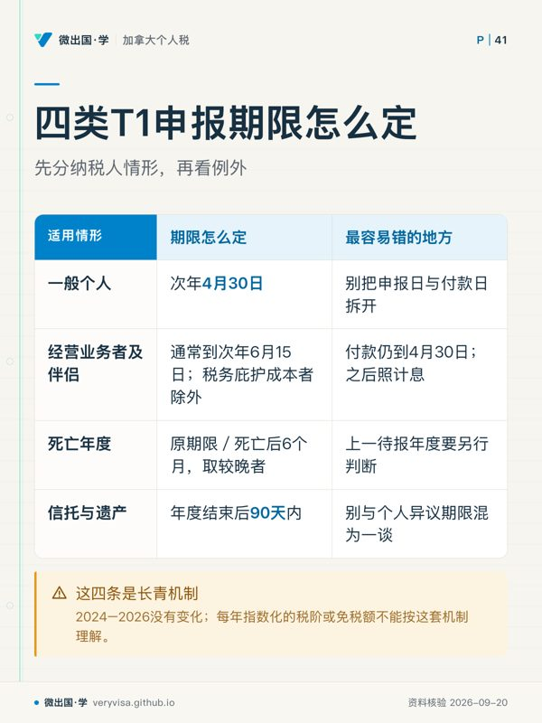
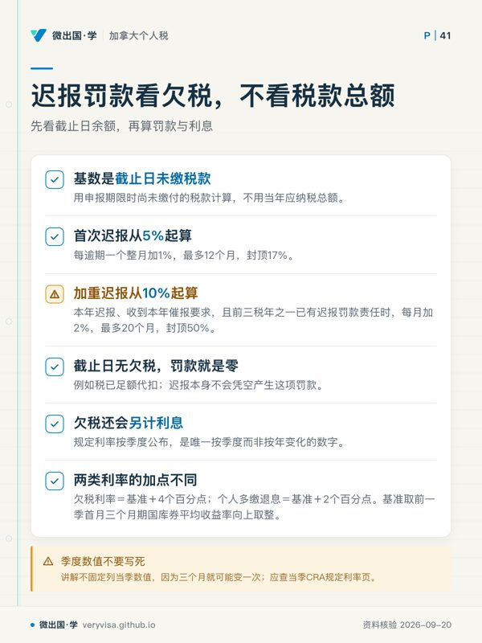
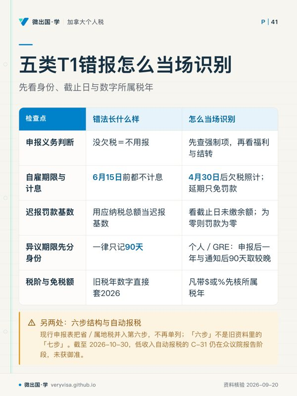

核实日期：2026-10-30（2026-11-24 补 Budget 2026 报税截止日提案）｜本页口径：2026 税年（2027 年 2–4 月申报）。本页含联邦《所得税法》(Income Tax Act, ITA) 逐年会变的税率与限额，180 天复核一次（下次 2027-01-31）；数字来源见文末「来源」。
一个刚开始独立报税、或者刚从别人手里接过报税这件事的人，第一次翻开申报表往往会问四个问题：我到底要不要报？什么时候报？报出来的税是怎么算出来的？报完之后 CRA 会不会来找我麻烦？下面按顺序回答——谁必须报、什么时候报、税表内部怎么从「总收入」一步步走到「应缴税额」，以及报完之后 CRA 会给你什么回执、错报会有什么后果。看完你就能判断自己或家人哪一年必须报税，分清自雇人士和一般雇员的申报期限差在哪，读懂评税通知（Notice of Assessment）上每一格大致在说什么，也知道迟报和异议各自还有多长的窗口。
年度流程版：加拿大 T1 报税全景：谁要报、怎么算、报完看什么。论坛文章按六步把收入、扣除、抵免、福利与注册账户放进同一张申报流程表，并说明收到评税通知后怎样核对；个案申报以当年 CRA 表格与指南为准。
ℹ️
两套口径要先分清
本页的税率、免税额、门槛数字属于联邦现行规则，会随税年变化；申报期限、迟报罚则、异议期限这几条则是长青机制，2024–2026 年没有变化。凡两者不一致，本页并列写出并标明现行值。
一、制度设计与底层逻辑：为什么是「自己算」而不是「政府算好通知你」
本节回答This section answers 自评税制下纳税人与税局职责分工Division of responsibilities between taxpayers and the CRA under the self-assessment system
加拿大的所得税制度有一个经常被误解的起点：这是一套自评税制（self-assessment system），意思是纳税人要自己把一整年的收入、扣除、抵免汇总起来，自己算出当年应缴的税额，再拿这个数字跟已经预扣或预缴的税款相比较——多退少补，最后把整套计算结果连同申报表一起交给 CRA。这跟很多人以为的「政府会替你算好、通知你交多少钱」正好相反：CRA 的角色是事后审核，不是事先代算。
这条制度设计背后有一个法律定性问题：谁算是「纳税人」（taxpayer）？《所得税法》把这个词定义得很宽，个人、公司、遗产的执行人、信托的受托人都算在内，而且一个人「是不是纳税人」跟「他实际上有没有欠税」是两件事——即使全年没有一分钱要交，也可能仍然是需要申报的纳税人。这就引出第一个常见误解：很多人以为「反正不欠税就不用报」，但这句话在两种情况下都是错的——一是即使不欠税，某些法定条件仍然强制要求申报（比如处置了应税资本财产、需要偿还部分老年金或就业保险福利、自雇净利润达到需要缴纳 CPP 供款的门槛）；二是即使不属于强制申报的任何一条，主动申报往往对纳税人更有利，因为很多退还性抵免（如各类家庭与低收入福利）都要求先有一份申报记录才能核发。
这套自评税制之所以这样设计，是因为它把「计算的责任」和「审核的责任」分给了两个不同的主体，而不是让政府一家包办：纳税人比谁都清楚自己实际的收入与家庭情况，让纳税人先算、CRA 再核，比让一个中央机构从零开始替几千万人逐笔核算收入更有效率。但这也意味着错报的法律后果落在纳税人自己身上——迟报有罚款、少报或漏报有额外罚则、CRA 有权在法定期限内重新评税（reassess），纳税人如果不服，也有对应的异议与上诉救济路径，这一整套「先自报、后核验、有争议再走程序」的闭环，正是本页第三、七节要讲的内容。
二、2026 税年现行规则与数字
本节回答This section answers 2026税年五档税率与门槛现行数值Current statutory rates and thresholds across the five tax brackets for the 2026 tax year 本章考题 1Question 1 本章考题 2Question 2 本章考题 3Question 3 本章考题 4Question 4
2.1 联邦最低税阶：一场分两年落地的降税（三列表）
联邦所得税按累进税制（progressive tax system）课征——收入越高、边际税率越高，这条原则本身多年未变；变了的是最低那一档税率的具体数字。2025 年 7 月 1 日起，联邦把最低税阶从 15% 降到 14%，因为降税是年中生效，2025 全年因此按一个混合税率 14.5% 计算，直到 2026 年才是全年 14%：
| 项目 | 2024 税年（考试口径） | 2025 税年（过渡） | 2026 税年（现行） | 状态 |
|---|---|---|---|---|
| 最低税阶税率 | 15% | 14.5%（全年混合，上半年 15%／下半年 14%） | 14% | 已生效 |
| 门槛（该档以下部分） | 55,867 元 | 57,375 元 | 58,523 元 | 已生效 |
2026 税年联邦五档税率与门槛为：14%（58,523 元 以下）／20.5%（至 117,045 元）／26%（至 181,440 元）／29%（至 258,482 元）／33%（超过部分）。这五个数字每年按 ITA s.117.1 指数化调整，2026 年的指数化幅度是 2.0%——考试口径里的 2024 税年数字距今已经差了两次年度调整，差距看起来不大，但足以在计算边际税负时产生真实误差。
⚠️
「14.5%」不是打字错误
很多人第一次看到 2025 年联邦最低税阶写着 14.5% 会以为是官方笔误。它不是——降税从年中生效，CRA 把上下半年的实际税负折算成一个全年等效税率，这个数字只在 2025 这一个过渡年出现，2024 年是 15%、2026 年起是 14%，三个数字都对，只是对应不同的税年。
联邦最低税阶下调还牵出一个不那么直观的后果：非退还税收抵免的抵免率，历来跟着最低税阶税率走。税率降了，理论上大多数人的抵免额「含金量」也跟着降了一点点——但对少数一次性抵免额特别大的人（比如当年有大额学费结转或大额医疗费），抵免贬值可能超过税率下降本身带来的省税。国会因此在 2025–2030 年设了一项过渡性的 Top-Up Tax Credit，专门给超过第一档门槛的那部分抵免额保留 15% 的抵免率，避免极少数人因为「降税」反而多交税。这条不是本页的重点，但如果家里有大额学费或医疗费结转，值得单独核实。
2.2 谁必须申报：门槛清单
个人有下列任一情形，2026 税年必须申报：CRA 发函要求你申报；当年有欠税；与配偶或普通法伴侣联名选择拆分养老金收入；处置了应税资本财产或实现了应税资本利得（哪怕最终利得部分只计入一半）；需要偿还部分老年保障金（OAS）或就业保险（EI）福利；提取了终身学习计划或购房计划下的注册退休储蓄计划金额且尚未还清；自雇净利润（或受雇及自雇合计的可供款收入）超过了 CPP 基本免供额，因而需要缴纳 CPP 供款；作为自雇者选择为自雇收入缴纳就业保险保费。2026 年 CPP 基本免供额维持 $3,500（多年未变，不随通胀指数化）——净自雇收入没有超过这个门槛，单从这笔收入本身不会触发 CPP 供款申报义务；一旦超过，超出部分就要按现行费率计算供款并通过申报表申报。
即使一条都不满足，主动申报仍然常常划算：想申领各类退还性福利与抵免（工作所得税福利及其预付款、各省与联邦的家庭补贴）、想结转当年未用完的学费或亏损、想让 RRSP 供款空间保持更新、想开始或继续领取与家庭收入挂钩的福利，都要求先有一份申报记录。「反正没欠税就不用报」这句话，在监管者眼里和在纳税人自己的钱包里，往往是两个不同的答案。
2.3 申报期限四条（长青机制，2024–2026 未变）
个人一般申报期限是次年 4 月 30 日；经营业务者及其当年同居配偶或普通法伴侣，通常可延至次年 6 月 15 日（业务支出主要为税务庇护投资成本者除外），但欠税的付款期限仍然是 4 月 30 日——这是最常被搞混的一条，第六节会用一个案例讲清它的后果。对某一待报税年，若死亡发生在该年 10 月之后、且不晚于原申报截止日，该年期限取「原本的申报期限」与「死亡日后 6 个月」的较晚者；这也可能涵盖次年申报期内死亡，须将死亡年度和上一待报年度分别判断；信托与遗产的申报期限是其纳税年度结束后 90 天内。这四条法定规则近三年没有变化，属于长青内容。
ℹ️
截止日可能从 2027 税年起统一改成 5 月 15 日
2026-11-05 的联邦预算提议：所有个人（包括自雇者及其配偶或伴侣）的 T1 申报截止日与欠税付款截止日一律改为 5 月 15 日，适用于 2027 及以后的税年，也就是最早 2028 年春天报税时才用得上。截至 2026-11-24 这只是「已宣布」，还没有立法。2027 年春天报 2026 税年，仍按本节的 4 月 30 日与 6 月 15 日，欠税照旧 4 月 30 日起计息。出处：Budget 2026 税务措施补充资料（Income Tax Return Filing and Balance-Due Dates for Individuals 一节）。
2.4 迟报与规定利率：基数是「欠的税」，不是「税款总额」
迟报罚款的计算基数是申报期限时尚未缴付的税款，不是当年应纳税总额——这是考试口径例题里最容易算错的一格。首次迟报：5% + 每逾期一个整月加 1%，最多计 12 个月，封顶 17%。本年迟报、收到本年催报要求，且本次迟报前已对前三税年之一发生迟报罚款责任的加重情形：10% + 每月加 2%，最多计 20 个月，封顶 50%。如果申报期限那天并没有欠税（比如税已经足额代扣），迟报罚款的基数就是零，罚款金额也是零——迟报本身不会凭空产生罚款，产生罚款的前提是「迟报 + 有欠税」两者同时成立。
欠税会额外计息，规定利率按季度公布，是本页唯一一类按季度而不是按年变化的数字。机制是：欠税利率＝当季基准利率（前一季首月三个月期国库券平均收益率向上取整）＋4 个百分点；个人多缴退税的退息利率＝基准＋2 个百分点。具体季度数值请查当季 CRA 规定利率页（2026 税年值，见年度数字表），讲解页不写死这个数，因为它三个月就可能变一次。
三、实务流程：六步怎么把收入算成应缴税，报完之后 CRA 怎么回
本节回答This section answers 六步申报流程各步骤具体核算内容Specific calculation components across each step of the six-step return process 本章考题 5Question 5
3.1 六步结构（不是七步）

截至本次核实，CRA 5000-G 入口提供的是 2025 税年版，采用六步结构。下表用这个已公开版本解释流程；2026 税年申报包通常要到 2027 年初才发布，届时行号与目录要再对一次；2026 年的税率和规则本身按各自法源适用：
| 步骤 | 名称 | 做什么 |
|---|---|---|
| Step 1 | 识别信息（Identification and other information） | 个人基本信息、配偶信息、选举法问题、海外财产申报（超 100,000 元 成本需勾选） |
| Step 2 | 总收入（Total income） | 汇总 T4、投资、租金、自雇等各类收入来源 |
| Step 3 | 净收入（Net income） | 从总收入扣除 RRSP 供款等法定扣除项 |
| Step 4 | 应税收入（Taxable income） | 从净收入再扣除若干额外扣除项，得到实际计税基数 |
| Step 5 | 联邦税（Federal tax） | 分三部分：先按应税收入算联邦税，再算非退还抵免额，两者相抵得到净联邦税 |
| Step 6 | 退税或欠税（Refund or balance owing） | 联邦税加省/属地税（经 Form 428 算出，计入本步骤），减已预扣与已缴税款及各类退还性抵免，得出最终退税或欠税 |
⚠️
如果你在别的地方看到「七步」，那是旧结构
这份申报表原本确实是七步，其中单独有一步叫「省/属地税」；这一步在 2021 税年被取消，改为通过 Form 428 计算后并入现在的第六步一起结算，七步因此变成六步。本次已核实的 2025 版仍是六步；2026 最终版发布后再核其行号与目录。看到「七步」的说法，多半来自 2020 税年以前的旧版本。
3.2 申报之后：评税通知（NOA）与 CRA 的核对流程
申报表交上去之后，CRA 会核对内容，可能按申报表原样确认、要求补充材料，或者自行做出调整（增加或减少应纳税额），核对完成后寄出一份评税通知（Notice of Assessment, NOA）。NOA 会汇总最终的退税或欠税金额，并说明 CRA 做了哪些调整；如果纳税人在申报时选择了电子申报并注册了在线邮件，评税通知往往在提交后很快就能在线看到（部分情形下可以通过 Express NOA 在电子申报后立即查看初步核定结果）。NOA 不是不可更改的最终裁决——它同时是纳税人计算「多长时间内可以提出异议」的起算参照点之一（见下一段），CRA 自己也可能在法定期限内另行复评。
个人查评税记录、办理换址等，可使用 CRA 的「我的账户」（My Account）。注册条件取决于登录方式：CRA user ID 或银行 Sign-In Partner 通常需要最近两年内已评税申报的数据；BC 与 Alberta 居民通过省级合作账户登录，即使从未报税，也可注册 CRA 账户。BC Services Card 或 Alberta.ca Account 路径用 SIN 核验身份，不需要另等 CRA 安全码。其他登录方式可选择合格证件的文件验证服务取得即时访问，或选择邮寄安全码；邮寄等待并不是所有人的必经步骤。（CRA（论坛解读））
如果对评税结果不服，个人纳税人（以及分级税率遗产 graduated rate estate）的异议期限，是「该年申报期限后一年」与「评税通知寄出后 90 天」两者中较晚的一个；公司与其他情形则是单纯的 90 天。这条经常被简化成「一律 90 天」，而对个人纳税人来说，那样理解会白白丢掉数月的救济期——第六节会用一个案例演示这条规则的实际效果。异议如果仍未能解决，且争议金额不大（争议税额 ≤25,000 元，或争议亏损 ≤50,000 元，按税年逐年计算而不是累计），可以走加拿大税务法院的非正式程序，流程比正式程序更简便。
3.3 报税渠道：现有几条路，谁能用哪条
绝大多数个人通过认证的电子申报系统提交申报表，也可以选择纸质申报。CRA 另设有面向特定低收入、单一收入来源人群的辅助申报服务（受邀或符合条件即可使用其中的数字化渠道），以及一项帮申报人自动带入官方已掌握的税务信息（如各类税务凭证）、减少手工录入的自动填表服务，两者都只是辅助工具，最终的申报责任仍然在纳税人自己身上——不论用哪种渠道提交，自评税制的核心义务不变。
✕
CRA 还没有开始替低收入人群自动报税
联邦这两年反复提出让 CRA 在满足严格条件时自行为部分低收入个人代为申报的构想，相关条文放在 C-31（《2025 年预算实施法 第二号》）里；截至 2026-10-30，C-31 的委员会报告刚提交众议院、处于报告阶段，还没三读，参议院也未通过，没有御准，不是正式法律。2026 税年不能依赖「CRA 会替我报」这句话——不属于任何辅助申报渠道覆盖范围的人，仍然需要自己完成申报或找人代办。
四、联邦之外：BC 这条怎么走
本节回答This section answers BC省居民省税合并申报征管路径Single return administration and filing pathway for BC provincial tax
除魁北克外，加拿大所有省与属地的个人所得税都由 CRA 统一征收，纳税人只需要提交一份联邦申报表，省/属地税通过前面提到的 Form 428 一并算出、计入第六步。BC 居民不需要单独向省里再报一次税：BC 省税率、BC 省级非退还抵免额都在同一份申报表里算完，申报期限与联邦完全一致（个人 4 月 30 日、自雇 6 月 15 日），迟报罚则、规定利率的机制也和联邦共用同一套规则。
魁北克是全国唯一的例外：魁北克自 1954 年起运营自己的省级个人所得税系统，魁北克居民需要分别向 CRA 提交联邦申报表、向魁北克省税局（Revenu Québec）提交省级申报表，两份表格分开计算、分开核定，联邦申报表上的退税或欠税金额只包含联邦部分。这个差异经常让刚从其他省搬到魁北克、或者跨省流动的家庭第一次报税时措手不及。
五、历史变革：从「T1」到「Income Tax and Benefit Return」，从七步到六步
本节回答This section answers 省税并入第六步引发的七步变六步Transition from seven steps to six steps caused by integrating provincial tax into Step 6
这份申报表用了上百年也一直在变。1917 年《战时所得税法》(Income Tax War Act) 是联邦所得税的起点，当时被当作战时临时措施，此后长期保留下来。表格本身近十年经历了几次结构性调整：2018 年，CRA 把这份表格的官方名称从沿用了一百年的「T1」正式改为「所得税与福利申报表」，不过「T1」这个说法在业界、在个人调整申报（T1 Adjustment Request）等场景里一直没有消失，2020 年 CRA 甚至把「T1」这个标记重新放回了表格首页；2019 年这份表格经历了一次版式大改，主表从 4 页扩到 8 页，原本单独的附表一并入主表，所有行号从三位数改成五位数；2020 税年，联邦税与非退还抵免额两部分的计算顺序被调换；2021 税年，原本单列的「省/属地税」这一步被取消，申报表从七步变成六步，此后到 2026 年结构保持不变——这正是第三节要强调「现在是六步」的原因。
数字层面，2025–2026 年最值得记住的一次变化是联邦最低税阶的下调：从 2024 年的 15%，2025 年因年中生效形成 14.5% 的全年混合税率，到 2026 年全年 14%——这是一次结构性下调，不是单纯的通胀调整。同一时期，CRA 也在逐步扩大数字化辅助申报服务的覆盖范围：面向低收入、单一收入来源人群的一条数字化申报渠道，此前几年一直严格限受邀对象，2024 报税季全国参与量占比不到千分之三；现行政策已经把其中一条数字渠道开放给「符合条件、有没有收到邀请函都可以用」，另外两条渠道仍然限受邀对象——覆盖范围在扩大，但还没有扩展到「CRA 主动替你报」的程度。
六、案例
本节回答This section answers 双职工家庭不欠税仍须申报保福利Dual-income families with zero tax payable must still file to preserve benefits
案例一：温哥华的双职工家庭——不欠税也要报（示例）
温哥华的一对双职工夫妻，太太当年因为休完育儿假重新上班、全年收入不高，两人算下来都不欠税。太太一度以为「反正不用补税，今年可以不报」。但家庭一直在领取与收入挂钩的儿童福利，而这类福利要求配偶双方都提交当年的申报表，一旦一方缺报，福利核发会被暂停——她这一年即使不欠税，也必须按时申报，否则影响的不是这一年的退税，而是接下来几个月的家庭现金流。
案例二：素里自雇网约车司机——两个日期不是同一天（示例）
素里一名全职开网约车的自雇司机，把「自雇报税期限是 6 月 15 日」记得很牢，于是当年 5 月才开始整理收据，6 月 10 日提交了申报表，觉得自己「提前完成、绝对没问题」。但他当年应缴税款有 $6,000，只在 6 月 10 日才通过申报表一并缴纳——这中间从缴款截止日次日（通常为 5 月 1 日）到 6 月 10 日的欠款期间，欠税已经按当季规定利率持续计息。申报期限延到 6 月 15 日只免掉了「迟报罚款」，没有免掉「欠税利息」——只要 4 月 30 日之后还有余额未缴，利息从缴款截止日次日起算；截止日遇法定顺延时也按顺延后的日期判断，这是这条延期规则里最容易被忽略的一半。
案例三：列治文的新移民长者——异议期限该怎么数（示例）
列治文一位新移民长者，2026 税年第一次在加拿大报税，CRA 在 2027 年 3 月中旬就寄出评税通知，通知里核减了她申报的一项抵免。她的朋友告诉她「评税通知 90 天内必须提异议，否则就晚了」，她因为语言和适应新环境耽搁，到 5 月底才想起这件事，一度以为自己已经超过 90 天、错过了机会。但按个人纳税人适用的规则，她的异议期限是「申报期限（2027 年 4 月 30 日）后一年」与「通知寄出后 90 天」两者中较晚的一个——也就是 2028 年 4 月 30 日之前都可以提出异议，90 天那个日期在她的情形里根本不是真正的截止日。「一律 90 天」的说法，会让个人纳税人白白以为自己已经错过了原本还有大半年的救济期。
七、常见错报与自查清单
本节回答This section answers 迟报罚款计算基数的自查核对要点Self-check verification points for the late-filing penalty calculation base
- 把「没欠税」等同于「不用报」——识别：先核对是否落在第二节的强制申报清单里，再核对是否有值得主动申报的退还性福利或结转项目，两条都排除了才是真的可以不报。
- 把「自雇 6 月 15 日申报期限」当成「6 月 15 日之前都不计息」——识别：只要 4 月 30 日之后还有欠税余额，利息照算，延期只免罚款不免利息（案例二）。
- 拿「应纳税总额」当迟报罚款的计算基数——识别：先确认申报期限当天是否真的有未缴余额，余额为零，罚款金额也是零。
- 把异议期限一律记成「90 天」——识别：先确认纳税人身份是个人／GRE 还是公司／信托，前者要在「申报期限后一年」与「通知后 90 天」之间取较晚者（案例三）。
- 把「六步」记成考试口径或旧资料里的「七步」——识别：现行申报表省/属地税并入第六步计算，不再单列一步，2021 年之后的结构以六步为准。
- 以为 CRA 已经能替低收入人群自动报税——识别：截至 2026-10-30，承载这项制度的 C-31 仍在众议院报告阶段，未获御准，不能作为「今年可以不用管」的理由。
- 拿 2024 或 2025 税年的税阶、免税额数字直接套 2026 税年的计算——识别：任何带 $ 或 % 的现行数字，先核对它对应的是哪一个税年，指数化每年都会小幅变动。
术语双语表
| en | zh | 一句机制 |
|---|---|---|
| self-assessment system | 自评税制 | 纳税人自己算税、CRA 事后审核，不是政府先代算 |
| taxation year | 纳税年度 | 个人固定为公历 1 月 1 日至 12 月 31 日 |
| filing due date | 申报截止日 | 个人一般为次年 4 月 30 日，自雇延至 6 月 15 日 |
| Notice of Assessment (NOA) | 评税通知 | CRA 核对申报表后寄发，汇总退税/欠税与调整说明 |
| Express NOA | 快速评税通知 | 电子申报后可立即查看的初步核定结果 |
| My Account | 我的账户 | CRA 面向个人的在线自助服务门户 |
| SimpleFile | 简化申报服务 | 面向低收入、单一收入来源人群的辅助申报渠道 |
| Auto-fill my return | 自动填表 | 自动带入 CRA 已掌握的税务凭证信息，减少手工录入 |
| progressive tax system | 累进税制 | 收入越高、边际税率越高，按级距分段计税 |
| marginal tax rate | 边际税率 | 增加的最后一元收入适用的税率档位 |
| federal basic personal amount (BPA) | 联邦基本个人免税额 | 每年指数化调整，高收入者递减适用 |
| late-filing penalty | 迟报罚款 | 基数为申报期限时未缴税款，首犯封顶 17%、重犯封顶 50% |
| prescribed interest rate | 规定利率 | 按季度公布，欠税与退税分别适用不同利率 |
| instalment | 分期预缴 | 预计当年欠税超过法定门槛须按期预缴 |
| Notice of Objection | 异议通知 | 对评税结果不服时提出的正式救济申请 |
| Tax Court of Canada | 加拿大税务法院 | 异议未解决后的司法救济渠道 |
| informal procedure | 非正式程序 | 争议金额较小案件适用的简化诉讼程序 |
| Canada Pension Plan (CPP) | 加拿大退休金计划 | 达基本免供额以上的收入须按费率供款 |
| basic exemption | 基本免供额 | CPP 供款计算起点以下的收入部分免供款 |
| reassessment | 复评 | CRA 在法定期限内对已核定申报表重新评税 |
| balance owing | 欠税余额 | 应纳税额超过已预缴/预扣部分的差额 |
来源
- Canada Revenue Agency, "Indexation adjustment for personal income tax and benefit amounts"（CRA）
- Canada Revenue Agency, "Current year tax rates and income brackets (2026)"（CRA（论坛解读））
- Canada Revenue Agency, "Last year tax rates and income brackets (2025)"（CRA（论坛解读））
- Canada Revenue Agency, "Tax rates and income brackets for all tax years"（CRA）
- Canada Revenue Agency, "Prescribed interest rates - 2026 fourth calendar quarter"（CRA）
- Income Tax Act s.117(2), Department of Justice Canada（加拿大联邦法规库（论坛解读））
- Income Tax Act s.150(1), Department of Justice Canada（加拿大联邦法规库）
- Income Tax Act s.156.1(1), Department of Justice Canada（加拿大联邦法规库（论坛解读））
- Income Tax Act s.162(1), Department of Justice Canada（加拿大联邦法规库）
- Income Tax Act s.165(1), Department of Justice Canada（加拿大联邦法规库（论坛解读））
- Tax Court of Canada Act s.18, Department of Justice Canada（加拿大联邦法规库（论坛解读））
- Canada Revenue Agency, "Federal income tax and benefit information for 2025"（5000-G 目录结构，六步确认）（CRA（论坛解读），暂存待并入）
- Canada Revenue Agency, "CPP contribution rates, maximums and exemptions"（2026 基本免供额 $3,500）（CRA，暂存待并入）
-
Canada Revenue Agency, "SimpleFile services"（现行邀请与资格范围）（CRA（论坛解读），暂存待并入）
-
CRA 账户注册及省级登录例外：Register for a CRA account（论坛解读），核于2026-09-08。
- C-31 进度：LEGISinfo Bill C-31 (45-1)（摘要 Part 1(b)「delivering automatic federal benefits for lower-income individuals」），核于 2026-10-30。
读完了：用考题把这一章过一遍
按这个顺序做，十五分钟：先看怎么考，再看陷阱，用思维导图默写一遍骨架，最后做 7 道带逐项解析的练习；错的题自动进间隔复习。
听、看、翻：零收入也有报税价值
AI 生成的中文讲解，经逐字稿核对；数字以本页正文与官方现行页面为准。

按本页正文制作，经非作者引擎逐句核对；数字以本页正文与官方现行页面为准。
本页知识卡
不看正文也能拿到这一节的核心内容：先看导读，再看图。点图放大，左右翻页。
- 先看先扫六个触发点，再单独检查能否拿回福利或保留结转。
- 易漏「反正没欠税就不用报」在监管者眼里和在自己钱包里是两个答案。
- 下一步去知识卡带着自己的收入来源逐项勾选；边界情形找持牌专业人士。

- 先看先按身份找行，再处理业务例外与死亡条件。
- 易漏死亡规则只在10月后且不晚于原截止日时触发；两个年度要分别判断。
- 下一步去讲解对照本人情形；死亡跨年度时请持牌专业人士核期。

- 先看顺序别反：先看截止当天还差多少钱，再选对应算法。
- 易漏代扣已足额时，晚交表格不等于这项罚款自动出现。
- 下一步去练习用一组样例分别求本金、罚款和计息。

- 先看先把问题归到申报、付款、异议或年度参数四类。
- 易漏旧说法常把表格结构和政策进度一起带偏，遇到旧页面要重核。
- 下一步去模考逐项排除；异议身份或时限边界请持牌专业人士核对。